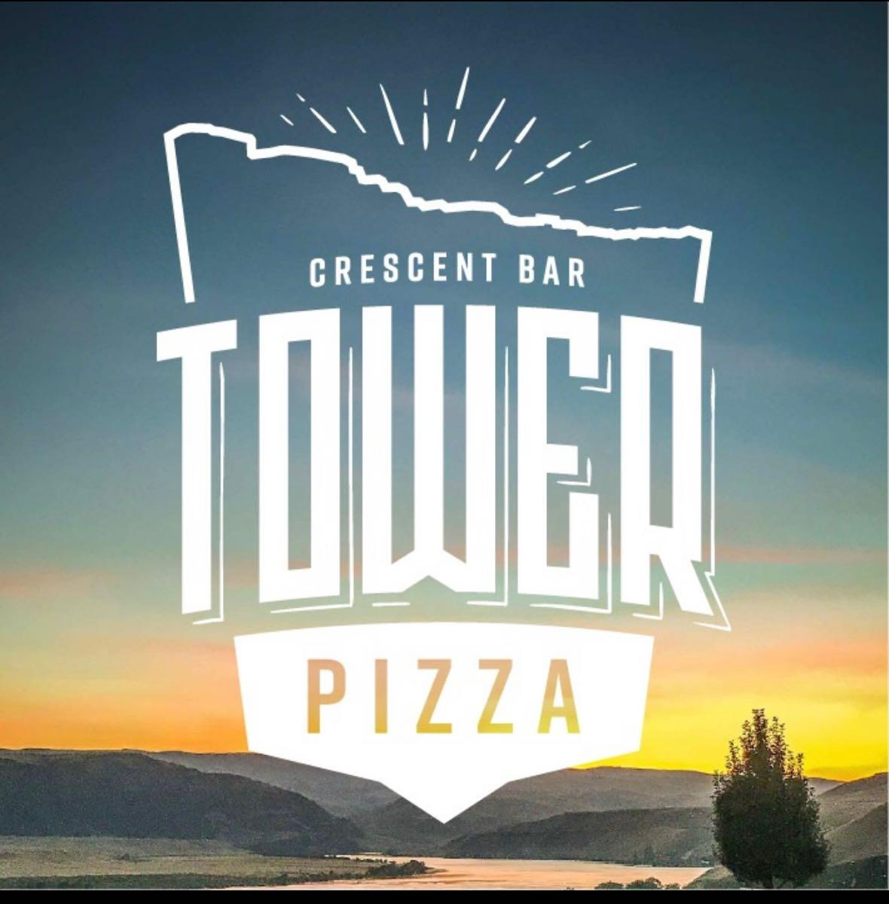

The Beaches

My Grandparent's Beach
My Grandparent's trailer was only a few hundred feet from one of the beaches at Cresecnt Bar.
This was the beach that I would visit most often when I was growing up, as it was one of the smaller beaches that not as many people would go to, so we had it mostly to ourselves.
It was aslo very convenient because of how close it was to our house.
Kelsey's Beach
My second cousin Kelsey and her parents had a place at Crescent Bar as well.
Their trailer was right on the water, so they had access to the beach from their house.
This beach was a beach that we frequently went to as well, because we could visit with our family at the same time.
This beach was also cool because there was a rope swing attached to a tree nearby that all of the kids would use to swing into the water.
The Public Beach
There was a beach that was right outside of the Cresecnt Bar resort so there was public access to.
This beach was always very crowded so we didn't visit it very often.
It was also right next to the boat launch, so is wasn't as safe as the beaches that were closer to our trailer.
What was nearby

The Ice Cream Parlor
There was an ice cream parlor that was just outside of the gates to the resort called Island Cup and Cone.
When visiting Crescent Bar my family would come to the ice cream shop at least once during each trip.
My sister and I loved the flavor cotton candy, and we would get the same thing every time.
The Golf Course
There was a golf course in Crescent Bar and they had a golf shop next to the ice cream shop as well.
My Grandpa loved to golf and would spend all day on the course when he was staying at Crescent Bar.
Not many other people in my family visited the course very often.
The Convenience Store
There was a little store that had mostly snacks, but you could get some essentials here as well.
If you wanted to go to an actual grocery store you would have to drive up to Quincy, a nearby town to the grocery stores there.
The Pizza Parlor
There was a pizza shop called Tower Pizza.
My family and I would go to this pizza shop at least once per trip to Crescent Bar.
The Swimsuit Shop
There was a small shop that sold bathing suits on the corner.
My sister and I would always want to look at what they were selling, and our second cousin Kelsey worked there over the summer for a couple of years.